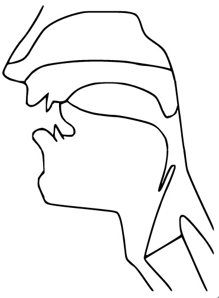
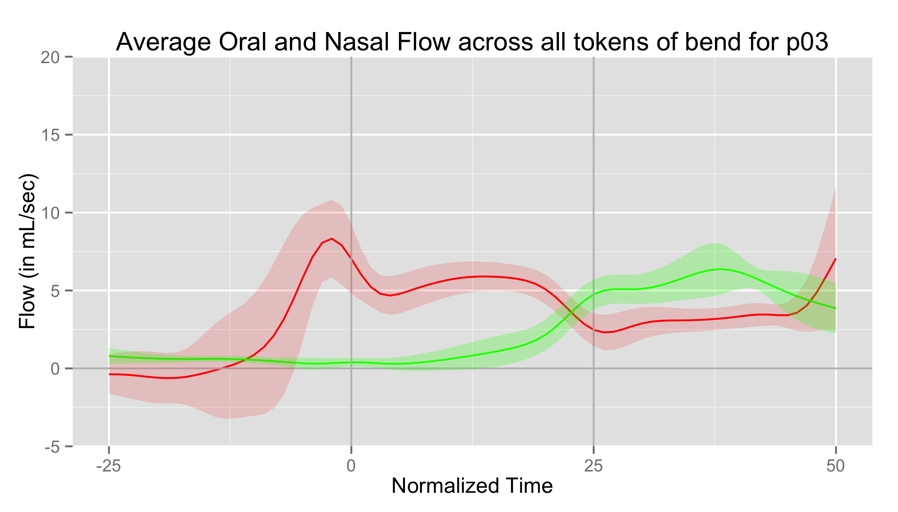
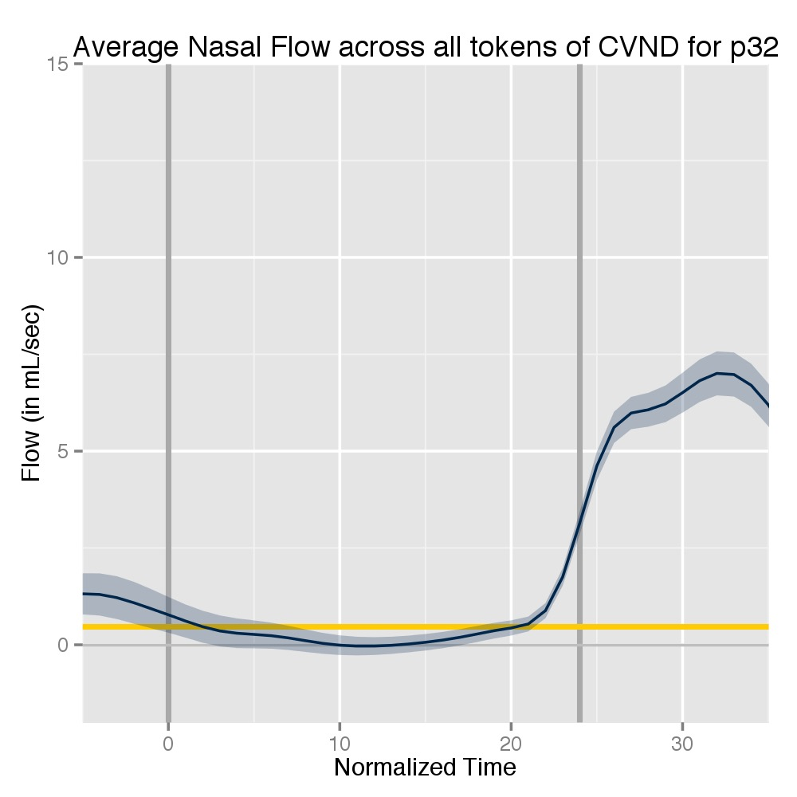
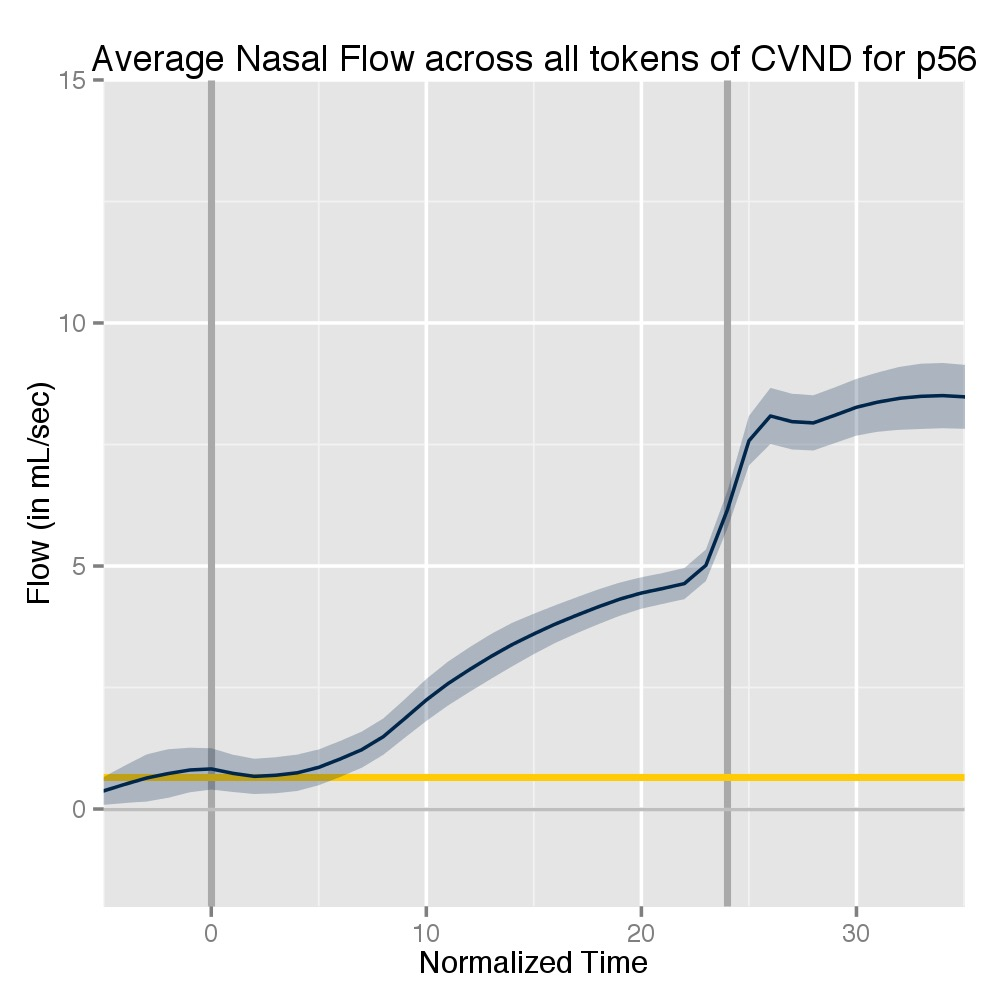
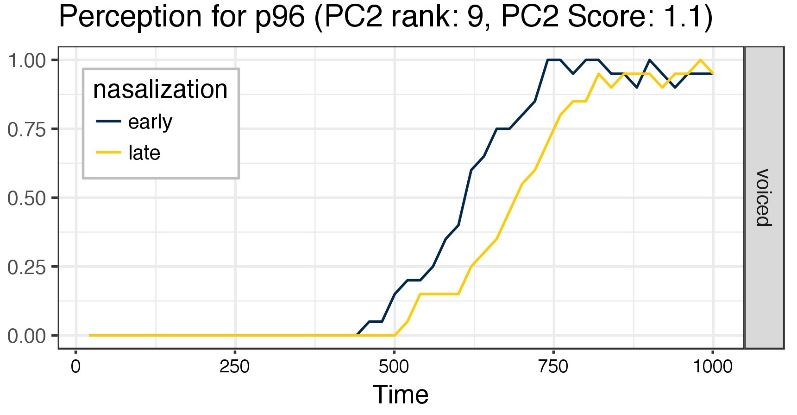
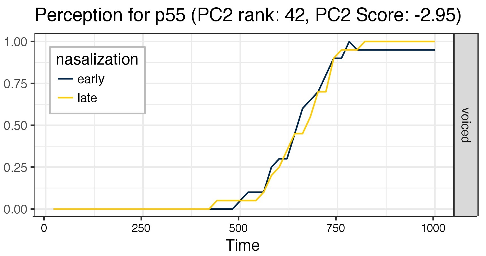
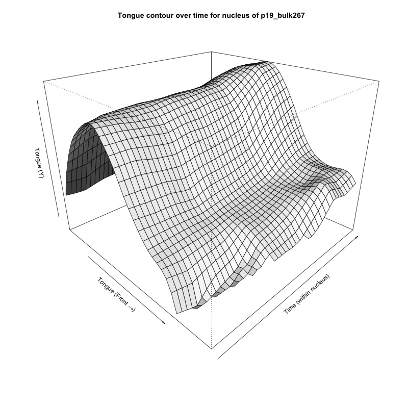
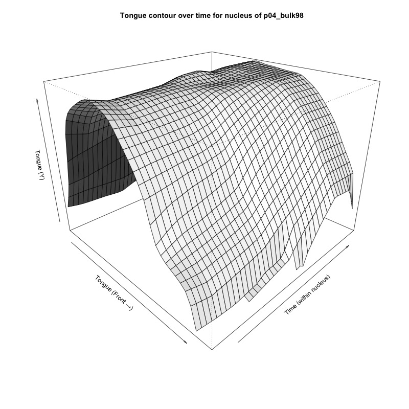

# Linguistic Problems with Statistic Solutions Will Styler <http://savethevowels.org/talks/colloq_ucriverside_2021.html> --- ### Today's Plan - What is Linguistics, and why? - Statistics in linguistics - Phonetics and Coarticulation - A Coarticulatory Measurement Success Story - A Coarticulatory Measurement Failure - Why am I here? --- # What is Linguistics, and why? --- ### Linguistics is the study of Language - What is this thing I'm doing right now with my flapping bits of meat around in my head and you then understanding my thoughts? - How can we describe what languages are doing? - How can we understand the differences and similarities among them? - What does language tell us about cognition and culture? --- ### Linguists study languages to understand Language - Many linguists speak lots of languages, but some don't! - We're interested in the whole enterprise, and study it scientifically --- ### We break Linguistics into subfields - "How does talking and understanding speech work?" - Phonetics - "How do units of sound or gesture change when we combine them?" - Phonology - "How do we build words?" - Morphology - "How do we combine words into sentences?" - Syntax - "How do we understand meaning in language, both generally and in context?" - Semantics and Pragmatics - "How does this less-well-known language work?" - Lg. Documentation - ... and many more! --- ### Linguistics is an increasingly experimental discipline - Some folks still work in armchairs - ... or in the homes and worlds of language experts - Theory is now often supported by quantitative or experimental data - Especially where the patterns are small, variable, or difficult to ferret out --- ### Almost every type of linguistic research has data to analyze - Text data (e.g. large corpora) - Survey data (e.g. responses, free text) - Experimental data (e.g. eye tracking, reaction time, accuracy) - Neural data (e.g. EEG, fMRI, PET, MEG) - Imaging data (e.g. video, ultrasound) - Spatial data (e.g. GIS info, 3D spatial movement tracking) --- # Statistics in Linguistics --- ## The State of Linguistic Statistics --- ### Most linguists take some basic statistics classes - "Statistics for Psychology Graduate Students" - This is often the minimum requirement - Increasingly more sophisticated classes are available - "Probabilistic Methods in Linguistics" (an intro to Bayesian stats in our department) - "Analyzing time series data using Generalized Additive Models" at the Linguistic Institute --- ### There are dedicated resources for statistics for Linguists > [Baayen, R. H. (2008). Analyzing Linguistic Data: A practical introduction to statistics using R. Cambridge University Press.](https://www.cambridge.org/us/academic/subjects/languages-linguistics/grammar-and-syntax/analyzing-linguistic-data-practical-introduction-statistics-using-r) > [Winter, Bodo (2020). Statistics for Linguists: An Introduction Using R. Routledge.](https://www.routledge.com/Statistics-for-Linguists-An-Introduction-Using-R/Winter/p/book/9781138056091) - ... alongside an increasing corpus of tutorials from statistically focused linguists --- ### There are complex analyses occurring in our field - Some specializations (e.g. neurolinguistics) require advanced models to function - ... but often have overfit to those models - Some linguists are statistical thought-leaders and have strong expertise - Bodo Winter, Harald Baayen, Jacolien van Rij, Martjin Wieling, and more - Some statistically saavy moonlight in linguistics (to varying degrees of success) - "I'm a physicist with a neat model so I now understand how language works..." --- ### But the average linguist is still using relatively unsophisticated models - T-Tests and Chi-Square are being phased out in publication - ANOVA and basic linear models are probably still the mode - There's lots of recent movement towards Linear Mixed Effects Regression - Speaker, word, and ordering differences are nicely handled by random effects - Reviewers are starting to demand mixed models where relevant - ... but mixed models are right at the edge of many linguists' understanding - This has led to a saying... --- ## "Giving Linear Mixed Models to Linguists is like giving shotguns to toddlers" --- ### There's a danger in escalating complexity without escalating education - We need more nuanced methods for more nuanced questions - ... but it's hard to find the right path ahead - We need new statistical methods for new experimental methods - ... but we seldom have the time or know-how to develop them --- ### We're going to look at these ideas in practice - ... by examining two case studies from phonetics --- # Coarticulation in Phonetics --- ### I'm a phonetician - My focus is on understanding exactly what's happening in the mouth when we talk - "What are you doing inside your body to produce this word?" - What do the 'speech gestures' of the tongue and mouth look like? - "How are listeners able parse or reconstruct that to understand that you've produced this word" - ... and we're going to focus on some phonetic questions today --- ### Speech isn't cleanly separable - We write letters one after the other, but letters are lies - We're more concerned with tongue gestures, which aren't separable - Speech sounds are **not** beads on a string - We often begin moving our articulators towards the next gesture before we've finished the current one - ... and the last sound can often have an influence on the current one - This overlap is called **coarticulation** - A nice example: 'car key' --- ### Coarticulation is easier when speaking - "Car key" is changing the articulation of one sound to better 'match' the next - Air starts flowing out the nose in words like 'bend' before we actually make the /n/ sound where it's supposed to - We might raise the tongue tip 'L' in 'bulk' earlier, both for efficiency and because... --- ### Coarticulation is helpful for perception too - It provides redundancy in signaling speech contrasts - It provides information about upcoming sounds *before they arrive* - It can help to reconstruct 'missing' sounds --- ### Coarticulation is important - We want to know how people produce it - ... to be able to model speech - We want to know how people perceive it - ... to be able to model listening - So, let's look at two specific instances of it --- # A Coarticulatory Measurement Success Story --- ### Nasal Coarticulation - /n/ is a 'nasal' sound, with airflow from the nose - This is accomplished by lowering the 'velum' <img class="r-stretch" src="phonmedia/sag_nasal.jpg"> --- <huge>bend</huge><br> * **...but there's more to it than the letters show us!** * In the word "bend", we start nasal airflow before the nasal /n/, *during the vowel* --- ### This is audible and useful to us - Is this 'bob' or 'bomb'? <audio controls> <source src="phonmedia/bomb_CJ1_8_noised-2198.wav" type="audio/wav"> </audio> - **We use can use coarticulation to tell what the upcoming word will be more quickly!** --- ### We can measure nasal coarticulation by measuring airflow from the mouth and nose - This is called 'pneumotachography' <img class="r-stretch" src="phonmedia/tools_airflowcu.jpg"> --- ### Airflow measurement gives us curves - Oral and nasal flow in mL/sec - Sampled (here) at 50 points through the vowel --- ### The word 'bed' has no nasal airflow <img class="r-stretch" src="phonmedia/airflow_bed.png"> --- ### The word 'bend' is more complicated  --- ### The /b/ has no nasal flow <img class="r-stretch" src="phonmedia/airflow_bend_annot_b.png"> --- ### The /n/ has lots of nasal flow and little oral flow <img class="r-stretch" src="phonmedia/airflow_bend_annot_n.png"> --- ### The vowel in the middle shows coarticulation <img class="r-stretch" src="phonmedia/airflow_bend_annot_coart.png"> --- ### Looking at airflow we can see coarticulation directly - Both the *amount* of flow and the *timing* of the flow --- ### Some speakers show only a bit of coarticulation  --- ### Some speakers show only a bit of coarticulation <img class="r-stretch" src="phonmedia/airflow_nasal_lowcoart2.jpg"> --- ### Some speakers show moderate coarticulation <img class="r-stretch" src="phonmedia/airflow_nasal_midcoart.jpg"> --- ### Some speakers show massive coarticulation <img class="r-stretch" src="phonmedia/airflow_nasal_highcoart.jpg"> --- ### Some speakers show massive coarticulation  --- ### Speakers differ greatly in their *production* of coarticulation - Ranging from 'practically none' to 'it's all nasal' - Inference can be done using splined mixed models, GAMs, and more - Functional data analysis isn't common in Linguistics, but it does happen! --- ### If speakers vary in their production of coarticulation - Do they differ in their *perception* of coarticulation as well? --- ### Measuring the Perception of Coarticulation - Often done using eyetracking - "When does the participant look at the correct image on the screen?" - "Does this person use vowel nasality to choose 'send' over 'said' more quickly?" --- ### Visual World Eyetracking <video class="r-stretch" controls src="video/eyetracking_english.mp4"></video> --- ### Eye Tracking Data - For each trial, 1000 binary points over the course of a second, 'Are they looking at the nasal word?' - 0000000000000001111111111... - Occasionally 00000000000000011111111110000000... - Many, many trials are averaged out to create response curves - "Generally speaking, does this person make a choice earlier in this condition than that one?" --- ### Conditions - "Early Nasalization": Coarticulation begins very early in the vowel - "Late Nasalization": Coarticulation begins later in the vowel - *How early is information about the word made available to listeners?* --- ### Listeners can be compared on the basis of their use of nasality - People who use coarticulation strongly in perception will decide 'send' over 'said' earlier for 'early' nasalization tokens - People who don't use coarticulation in perception will show little distinction between the conditions --- ### Listeners who use coarticulation <img class="r-stretch" src="phonmedia/eyetracking_largeuse1.jpg"> --- ### Listeners who use coarticulation  --- ### Listeners who largely ignore coarticulation  --- ### Listeners who largely ignore coarticulation <img class="r-stretch" src="phonmedia/eyetracking_littleuse2.jpg"> --- ### So, now we can measure perception of coarticulation - ... and production - This allowed us to ask one very large question... --- ### Is a listener's production of coarticulation related to their perception of coarticulation? - Put differently, do people who coarticulate early, listen for it early? - *Do people who talk unusually expect others to talk the same way?* - This was tested in [Beddor et al. 2018](https://muse.jhu.edu/article/712563) - <small> Beddor, P.S., Coetzee, A.W., Styler, W., McGowan, K.B., & Boland, J.E. (2018). The time course of individuals’ perception of coarticulatory information is linked to their production: Implications for sound change. _Language_ _94_(4), [doi:10.1353/lan.2018.0071](http://doi.org/10.1353/lan.2018.0071)</small> --- ### This is a surprisingly useful question - It gets at the heart of the gesture vs acoustics debate in speech perception - It tells us about the role of our own productions in guiding our learning of a language - It has massive implications for how languages change over time --- ### But it's really, really unpleasant to test - Correlating a functional airflow curve (with massive variation in values) with the overall trend across a large set of logistic time series from eye tracking trials - We have truly random factors we want to get rid of - Variation in frequency and 'lookability' across words - Our research question involves speaker variation in time-to-look by condition and variation in flow slope and time onset - ... but we want to control for speaker variation in pre-look processing time, absolute differences in airflow volume - We're interested in speaker variation, but the experiment was so complex that we could only collect 42 participants --- # Yikes - We needed help --- ### Help [Kerby Shedden](https://sph.umich.edu/faculty-profiles/shedden-kerby.html) from University of Michigan Department of Statistics <img class="r-stretch" src="people/kerbyshedden.jpg"> --- ### We ended up collapsing the airflow data using PCA - This gave us a single quantity representing timing and degree of coarticulation ('PC2') which we could insert into a model of perception - The perception model was run using ``mcmcglmm`` in R, with b-splines to model temporal variation --- ### Turns out that people who produce early coarticulation generally listen for early coarticulation <img class="r-stretch" src="phonmedia/beddor_et_all_fig11_mod.jpg"> (Adapted from Beddor et al 2018) --- ### Work is ongoing to continue investigating these issues - The perception/production link can be examined in *many* speech phenomena - What if we tested the perception/production link in another domain? - **Let's see if we can correlate tongue movement with perception!** --- # A Coarticulation Measurement Failure --- ### How does the middle part of 'bulk' work? - For some people, there's the vowel in 'buck', then an L sound, with minimal overlap - For others, the L is strongly **coarticulated** with the vowel - And for many, there's just one steady mixed "ul" vowel - This is an interesting question for speech perception, speech recognition, and text-to-speech - **How can we tell who's doing which of these things, quantitatively?** - ... and can we predict who does what? --- ### Ultrasound Imaging - Pulse high-frequency sound waves into the body - Measure the patterns in which they return to image internal structure - The resulting data are black and white image frames showing areas of high and low reflection --- ### Ultrasound Data Acquisition <img class="r-stretch" src="phonmedia/tools_ultrasound.jpg"> --- ### Sample Speech Ultrasound file <video class="r-stretch" controls src="video/ultrasound_northwind.mp4"></video> --- ### Ultrasound in Speech - Captures the motion of the tongue in (generally) two dimensions - Offers 60+ frames per second time resolution - Ideal for tracking the *relative location* and *contour* of the tongue and --- ### Ultrasound 'Splining' - The machine outputs a series of images (or grayscale matrices) at a fixed sampling rate - We transform images into lists of ordered points representing the tongue shape and location - This is done by the researcher and team directly - ... or using [neural networks](https://arxiv.org/abs/1907.10210) - Or full-frame PCA is used to look for changes (c.f. [Faytak et al. 2020](https://www.journal-labphon.org/article/id/6281/)) - There are other complexities I'm skipping here! --- <section> <img class="r-stretch" src="phonmedia/ultrasound_raw.jpg"> </section> --- <section> <img class="r-stretch" src="phonmedia/ultrasound_splined.jpg"> </section> --- ### This splined data gives us details about articulation - How do tongue contours differ between sounds? - "Does the tongue shape differ for 'buck' and 'bulk'?" - How do tongue contours change during sounds? - "At what point does the tongue start moving towards the /l/ gesture in 'bulk'?" - ... or is there no change at all for this speaker? --- ### Does the tongue shape differ for 'buck' vs. 'bulk'? <img class="r-stretch" src="phonmedia/ultrasound_vowel.jpg"> <img class="r-stretch" src="phonmedia/ultrasound_lateral.jpg"> --- ### Comparing Contours is difficult (for us) - Averages and center of gravity can give some clarity - Usually done using Smoothing Spline ANOVA in Linguistics - Occasionally mixed models with B-Splines, Generalized Additive Models (GAM), and Growth Curves <img class="r-stretch" src="phonmedia/ultrasound_vowel.jpg"> <img class="r-stretch" src="phonmedia/ultrasound_lateral.jpg"> --- ### At what point does the tongue start moving towards the /l/ gesture in 'bulk'? - This is a place where speakers vary - We can look at the time course of the vowel+l portion of the word --- ### Some people show some change later  --- ### Some people have massive change early on <img class="r-stretch" src="phonmedia/ultrasound_bulk_bigchange.jpg"> --- ### Some people don't show change at all  --- ### Measuring these changes is very difficult (for us) - Quantifying the degree of change in a 50 point spline which changes contour and position over time - Variably, across speakers - Identifying the *onset* of the contour change in time - Identifying specific types of contour change which are most relevant - Finding 'targeted' vs 'untargeted' change - **There isn't a well-established statistical method for doing this in our field!** --- ### We had hoped to continue down this road - Also to recreate the perception/production study above with these data - **This is a very hard analysis problem, and we weren't up to the task** - *... and we also had trouble finding enough people with changing vowels* --- ### This is a case where our ability to analyze hindered our ability to describe - We're finding more of those all the time! - Which helps answer the question... --- # Why am I here? --- ### Increasingly complex data has pulled us into complex territories - We've moved from single variable correlations into functional data - In many cases, functional data is itself captured in a time series - New methods are arriving for us every day - ... but our questions are generally different enough that existing statistical toolchains don't cleanly apply --- ### Increasingly complex questions require increasingly nuanced analyses - We've moved from presence/absence into time course information - We're now increasingly studying the kinds of variability which conventional models attempt to factor out - Potentially explanatory data is seldom low-dimensional! --- ### Our statistical needs have surpassed our statistical abilities - Grad level Psych Stats has very little to say about comparing 3D meshes of tongue motion by conditions - This poses a massive pedagogical problem! - Reviewers are generally chosen for knowledge of specific linguistic domains, with varying statistical saavy - "Why not just use an ANOVA here?" or "How did you settle on the right number of spline coefficients?" - Keeping up with the statistical state-of-the-art is a full-time job - So us statistically-interested linguists are just toddlers with bigger shotguns --- ### That's why I'm here today - (That and Shuheng's gracious invitation) --- ## Linguists and Statisticians should talk more! --- ### Language is uniquely rewarding as an area of research - You are quite literally always using language - Problems are often interpretable in terms of linguistic experience - It offers a diversity of data types, often in the same experiments - Text data, behavioral experiments, sensor output, imaging data, GIS, and more - Linguistic knowledge is helpful for breaking into Natural Language Processing, and other language-focused data science - Everything I've talked about today has straightforward applications in speech recognition and text-to-speech --- ### Collaborations can be very fruitful! - We often have questions with more nuance than the techniques we know - Basic-to-you statistical approaches may enable advanced-for-us questions! - It's very possible that new techniques in statistics could allow revolutionary questions in our field - Often, new analytical approaches provide new avenues for research - Collaborations can be mutually rewarding and mutually beneficial - Linguists learn Stats, Statisticians learn Language --- ### This is a potential growth area in our field - There is increasing discussion of hiring statisticians in departments and divisions for consulting and collaboration - ... and already, statistical saavy is a common desired trait for new hires - Statisticians who know even basic elements of language will be increasingly valued in industry and life - Natural Language Processing is Statistics and Machine Learning about language --- ### Teamwork can make the dream work - Linguistic work is often held back by relatively basic inference approaches - Increased complexity of data, and increased complexity of questions, both leave ample room for collaboration - New methods in statistics likely have testable uses in language - New questions in linguistics may require new methods in statistics - And people collaborating in this world have a very real chance to make a difference in both fields --- ### Let's talk! - Next time you're looking to branch out, remember that we linguists are here - That we've got amazing data - ... and that at the very least, you may be able to help keep a toddler safe! --- <huge>Thank you!</huge> Questions? <wstyler@ucsd.edu> <http://savethevowels.org/talks/colloq_ucriverside_2021.html> <!-- Linguistic Problems with Statistic Solutions In this talk, my goal is to briefly introduce a statistical audience to some of the particularly interesting types of data, hypotheses, and open questions found in Phonetics, the subfield of Linguistics dedicated to the study of speech and speech perception. We'll discuss the state of the field, and then look at two case studies, the analysis of ultrasound data of tongues, and the production-perception loop in speech and perception. In doing so, we'll discuss some of the myriad difficulties left for linguists, and highlight areas which may prove fertile ground for collaborative statistical research. -->